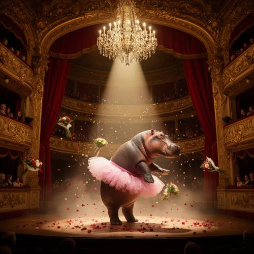
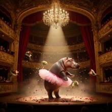
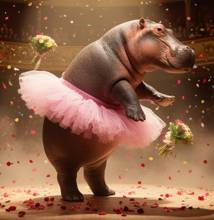

Action — Please design a magnificent Baroque Opera House interior, center stage
Please design a magnificent Baroque Opera House interior, center stage, a hippo wearing a tutu is elegantly curtain call.


Judge — Direct
- FAILAction - Full-body (Character/Anthropomorphic) — The hippopotamus is standing still on the stage, facing forward. It is not depicted performing the action of a curtain call, such as bowing or gesturing to the audience.
- PASSStyle — The interior of the opera house is depicted in a Baroque style, characterized by its ornate and lavish decorations, including extensive gold gilding on the balconies and proscenium arch, intricate carvings, a large crystal chandelier, and painted ceilings.
- PASSCompound - Feature Matching — The image shows a large hippopotamus as the central figure, and it is wearing a white, multi-layered tutu around its waist.
Judge — Continuum
- PASSAction - Full-body (Character/Anthropomorphic) — The hippopotamus is depicted in a full-body pose, standing on its hind legs on the stage. It has one front leg bent and raised in a gesture that resembles a bow or curtsey, which is a key part of a curtain call. The context, with falling confetti and bouquets being thrown, reinforces the action of a curtain call.
- PASSStyle — The interior of the opera house is lavishly decorated in a style consistent with Baroque aesthetics. It features ornate, gilded detailing on the tiered balconies and the proscenium arch, heavy red velvet curtains, and a large, elaborate crystal chandelier. The overall impression is one of magnificence and grandeur, matching the 'magnificent Baroque Opera House' description.
- PASSCompound - Feature Matching — The central figure in the image is a hippopotamus. This hippopotamus is shown wearing a pink, multi-layered tulle skirt around its waist, which is identifiable as a tutu.
What the agent did
Thinking
Let me generate the image with flux2-dev.
Model
I'll generate this Baroque opera house scene with a tutu-wearing hippo taking a curtain call.
Step 1 — `generate_image`
{
"model": "flux2-dev",
"prompt": "Magnificent Baroque opera house interior, opulent golden gilded balconies with ornate carvings, red velvet curtains drawn back on a grand stage, crystal chandelier glowing above tiered balconies filled with tiny audience silhouettes, dramatic warm theatrical spotlight center stage. A large hippopotamus wearing a fluffy pink tutu stands upright on its hind legs, gracefully bowing in an elegant curtain call, one front leg extended in a dancer's gesture, rose petals scattered at its feet, confetti and thrown bouquets in the air, soft spotlight haze, cinematic rich detail."
}Result img_0

Thinking
The first generation looks quite good already: Baroque opera house interior with gilded balconies, red velvet curtains, chandelier, hippo in pink tutu taking a bow, bouquets flying, petals scattered. The hippo appears to be bowing elegantly. This is already quite strong. Let me mark it as best, then consider minor improvements. One detail: the tutu placement seems fine, the hippo is center stage. Maybe the hippo could be more clearly bowing with one leg extended, but it looks elegant already. This is good enough — mark best and stop. Perhaps do a quick inspection? The image looks clean. I could verify details but it looks solid. I'll mark best and maybe do one small enhancement? The prompt says stop when good enough. I'll mark and finish.
Model
This first generation is already very strong — the Baroque opera house has gilded balconies, red velvet curtains, a glowing crystal chandelier, tiered audiences, and the hippo in a fluffy pink tutu is center stage mid-bow with bouquets flying and rose petals scattered. Let me mark it and check the details.
Step 2 — `mark_best`
{
"image": "img_0",
"reason": "All requested elements present and well-composed: magnificent Baroque opera house interior, center-stage hippo in pink tutu elegantly taking a curtain call, with bouquets, petals, and dramatic spotlight."
}Step 3 — `inspect_region`
{
"image": "img_0",
"padding": 40,
"roi": "the hippopotamus in the tutu"
}Result img_1

Thinking
The close-up shows the hippo in a graceful bowing pose, tutu rendered nicely, fine details clean. Good enough — stop here.
Model
The close-up confirms excellent detail — the hippo is captured mid-curtsy with a graceful dancer's gesture, the layered pink tulle tutu is beautifully rendered, and flying bouquets with falling petals complete the curtain-call moment. The image is complete and I'm keeping the marked version. Final result: - **Baroque opera house interior**: ornate gilded balconies and carvings, red velvet curtains, tiered boxes with audience members, grand crystal chandelier - **Center stage spotlight**: dramatic golden beam with atmospheric haze - **The star**: a hippo in a fluffy pink tutu taking an elegant curtain-call bow, front legs in a dancer's gesture - **Finishing touches**: thrown bouquets in mid-air, confetti and rose petals scattered across the stage floor